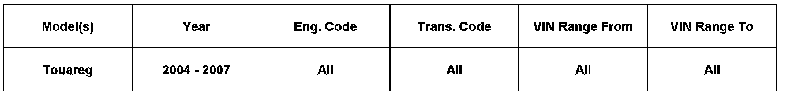

Tire Monitor System - System Diagnostics: Overview
44 08 01March 12, 2008
2010617, Supercedes Technical Bulletin Group 44 number 07-01, dated March 22, 2007 due to added step verify cable adjustment.

Affected Models
Condition
Tire Pressure Monitoring System (TPMS), Diagnosing
Consumer concern that TPMS warning light is displayed in instrument cluster.
Technical Background
Assist in the accurate diagnosis of the Tire Pressure Monitoring System (TPMS).
Production Solution
No production change required.
Warranty
Information only.
Required Parts and Tools
No Special Parts required.
No Special Tools required.
Additional Information
All part and service references provided in this Technical Bulletin are subject to change and/or removal. Always check with your Parts Dept. and Repair Manuals for the latest information.